devtools::load_all() # if using the rproject dowloaded from the slides
# source("utils-glm.R") # if using a standard setup
library(here)
library(tidyr) # for data manipulation
library(dplyr) # for data manipulation
library(ggplot2) # plotting
library(car) # general utilities
library(effects) # for extracting and plotting effects
library(emmeans) # for marginal meansLab 4
data("tantrums")
dat <- tantrumsOverview
The dataset tantrums.csv is about the number of tantrums of nrow(child) toddlers during two days at the nursery. The columns are:
id: identifier for the childtemperament: the temperament of the child as “easy” or “difficult”attachment: the attachment of the child as “secure” or “insecure”parent_se: an average self-esteem value of the parents (self report)parent_skills: a score representing the teacher judgment about parenting skillstantrums: the number of tantrums
We want to predict the number of tantrums as a function of these predictors.
- Importing data and check
- in the presence of
NA, remove the children - convert to factors the categorical variable with “difficult” and “insecure” as reference values
- in the presence of
- Exploratory data analysis
- Model fitting with
glm() - Diagnostic
- Interpreting parameters
- Model selection
- What about interactions?
1. Importing data and check
Check the structure:
str(dat)'data.frame': 122 obs. of 6 variables:
$ id : int 1 2 3 4 5 6 7 8 9 10 ...
$ temperament : chr "difficult" "easy" "difficult" "difficult" ...
$ attachment : chr "insecure" "secure" "secure" "secure" ...
$ parent_se : int 3 4 9 8 4 6 10 6 10 4 ...
$ parent_skills: int 5 8 5 6 7 2 9 7 1 7 ...
$ tantrum : int 1 0 1 0 0 10 0 2 7 0 ...Check for NA:
sapply(dat, function(x) sum(is.na(x))) id temperament attachment parent_se parent_skills
0 1 1 0 0
tantrum
2 So we have some NA values. We managed them according to the instructions:
dat <- dat[complete.cases(dat), ]
dat$id <- 1:nrow(dat) # restore the id
rownames(dat) <- NULLLet’s convert the categorical variables into factor with the appropriate reference level:
dat$temperament <- factor(dat$temperament, levels = c("difficult", "easy"))
dat$temperament[1:5][1] difficult easy difficult difficult difficult
Levels: difficult easydat$attachment <- factor(dat$attachment, levels = c("insecure", "secure"))
dat$attachment[1:5][1] insecure secure secure secure insecure
Levels: insecure secure2. Exploratory data analysis
Let’s compute some summary statistics and plots.
summary(dat) id temperament attachment parent_se
Min. : 1.00 difficult:32 insecure:39 Min. : 1.000
1st Qu.: 30.25 easy :86 secure :79 1st Qu.: 5.000
Median : 59.50 Median : 7.000
Mean : 59.50 Mean : 6.364
3rd Qu.: 88.75 3rd Qu.: 8.000
Max. :118.00 Max. :10.000
parent_skills tantrum
Min. : 1.000 Min. : 0.00
1st Qu.: 5.000 1st Qu.: 0.00
Median : 6.000 Median : 1.00
Mean : 6.237 Mean : 1.72
3rd Qu.: 8.000 3rd Qu.: 2.00
Max. :10.000 Max. :20.00 table(dat$temperament)
difficult easy
32 86 table(dat$attachment)
insecure secure
39 79 table(dat$attachment, dat$temperament)
difficult easy
insecure 12 27
secure 20 59par(mfrow = c(1,3))
hist(dat$parent_se)
hist(dat$parent_skills)
hist(dat$tantrum)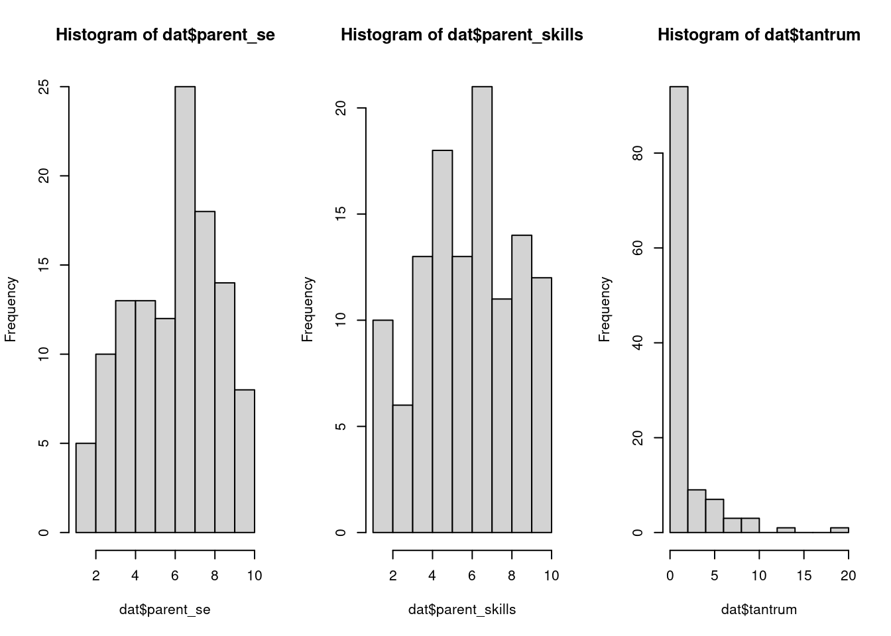
Let’s compute some bivariate relationships:
plot(dat$parent_se, dat$tantrum, pch = 19)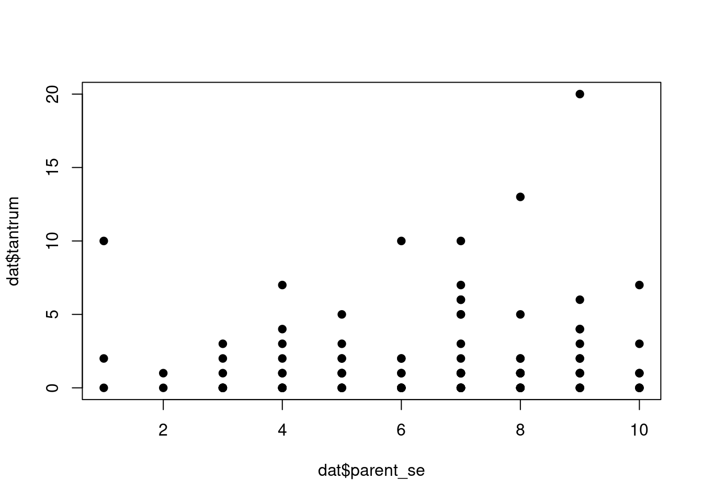
plot(dat$parent_skills, dat$tantrum, pch = 19)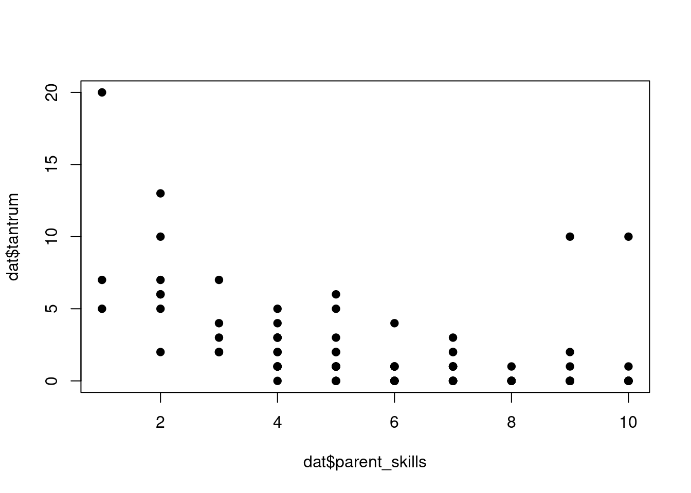
boxplot(tantrum ~ temperament, data = dat)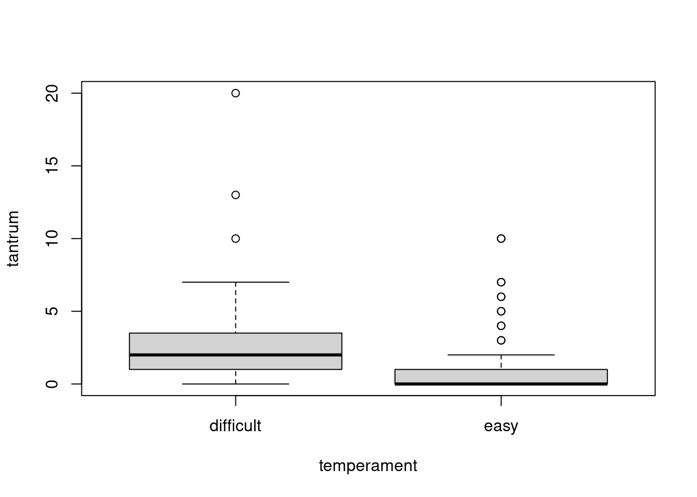
boxplot(tantrum ~ attachment, data = dat)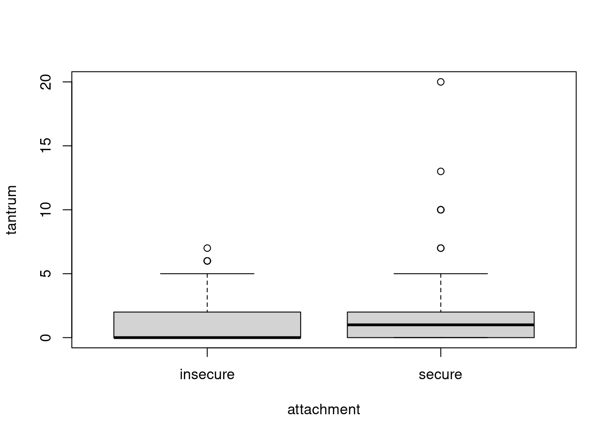
3. Model fitting with glm()
We can start by fitting our null model with the poisson() family:
fit0 <- glm(tantrum ~ 1, family = poisson(link = "log"), data = dat)What is the intercept here?
Then we can fit a model with the attachment effect:
fit1 <- glm(tantrum ~ parent_se, family = poisson(link = "log"), data = dat)
summary(fit1)
Call:
glm(formula = tantrum ~ parent_se, family = poisson(link = "log"),
data = dat)
Coefficients:
Estimate Std. Error z value Pr(>|z|)
(Intercept) 0.02631 0.22966 0.115 0.9088
parent_se 0.07870 0.03240 2.429 0.0151 *
---
Signif. codes: 0 '***' 0.001 '**' 0.01 '*' 0.05 '.' 0.1 ' ' 1
(Dispersion parameter for poisson family taken to be 1)
Null deviance: 421.11 on 117 degrees of freedom
Residual deviance: 415.05 on 116 degrees of freedom
AIC: 590.21
Number of Fisher Scoring iterations: 6What about the overdispersion? What could be the reason?
Assuming that the attachment is the only variable that we have, we could estimate the degree of overdispersion:
sum(residuals(fit1, type = "pearson")^2)/fit1$df.residual[1] 5.065601performance::check_overdispersion(fit1)# Overdispersion test
dispersion ratio = 5.066
Pearson's Chi-Squared = 587.610
p-value = < 0.001Overdispersion detected.Let’s have a look also at the residual plot:
residualPlots(fit1)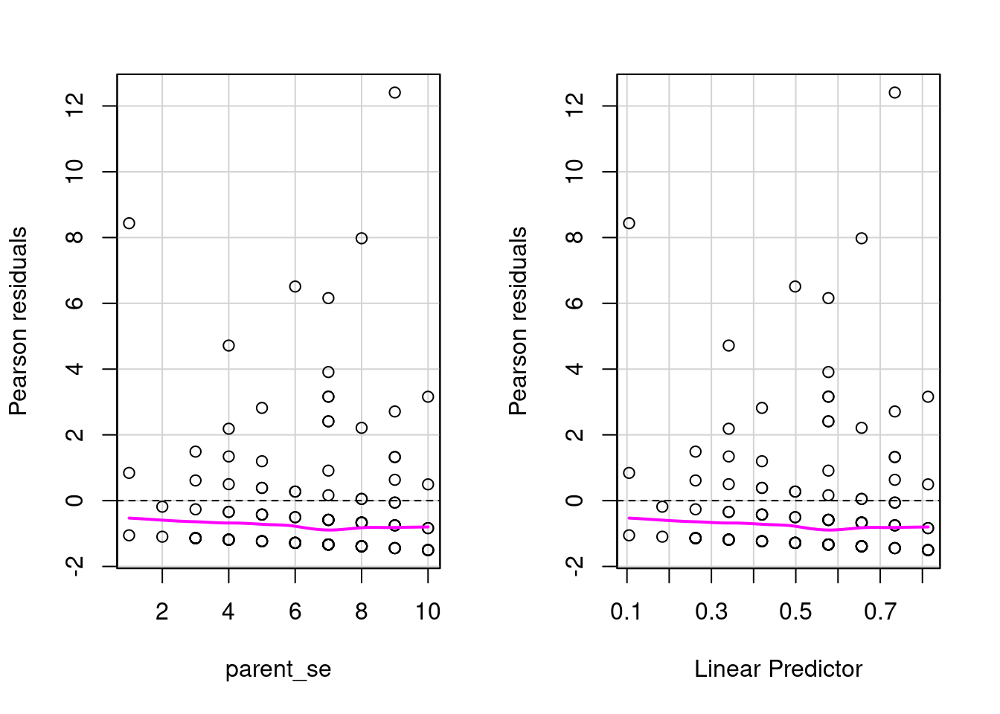
Test stat Pr(>|Test stat|)
parent_se 3.1933 0.07394 .
---
Signif. codes: 0 '***' 0.001 '**' 0.01 '*' 0.05 '.' 0.1 ' ' 1There is clear evidence of overdispersion. But we have several other variables so before using another model let’s fit everything:
fit_s <- glm(tantrum ~ attachment + temperament + parent_se + parent_skills, family = poisson(link = "log"), data = dat)
summary(fit_s)
Call:
glm(formula = tantrum ~ attachment + temperament + parent_se +
parent_skills, family = poisson(link = "log"), data = dat)
Coefficients:
Estimate Std. Error z value Pr(>|z|)
(Intercept) 3.19125 0.34888 9.147 < 2e-16 ***
attachmentsecure -0.05147 0.15964 -0.322 0.747
temperamenteasy -0.82435 0.14127 -5.835 5.36e-09 ***
parent_se -0.01881 0.03605 -0.522 0.602
parent_skills -0.38883 0.03454 -11.257 < 2e-16 ***
---
Signif. codes: 0 '***' 0.001 '**' 0.01 '*' 0.05 '.' 0.1 ' ' 1
(Dispersion parameter for poisson family taken to be 1)
Null deviance: 421.11 on 117 degrees of freedom
Residual deviance: 218.91 on 113 degrees of freedom
AIC: 400.07
Number of Fisher Scoring iterations: 6Let’s check again overdispersion and pearson residuals:
residualPlots(fit_s)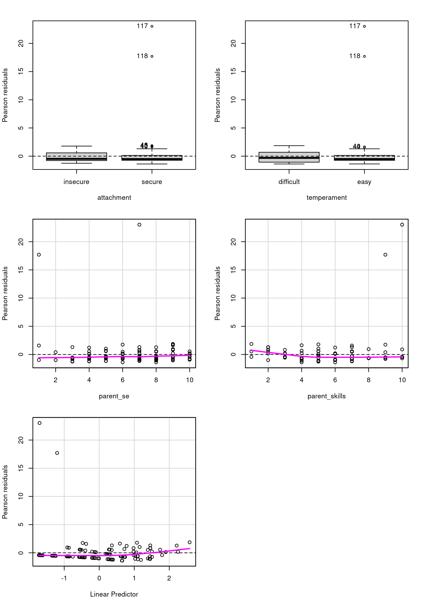
Test stat Pr(>|Test stat|)
attachment
temperament
parent_se 9.5838 0.001963 **
parent_skills 29.1366 6.745e-08 ***
---
Signif. codes: 0 '***' 0.001 '**' 0.01 '*' 0.05 '.' 0.1 ' ' 1The majority of the distribution seems ok, but there are some values with very high residuals and the overdispersion is still present:
sum(residuals(fit_s, type = "pearson")^2)/fit_s$df.residual[1] 8.14082performance::check_overdispersion(fit_s)# Overdispersion test
dispersion ratio = 8.141
Pearson's Chi-Squared = 919.913
p-value = < 0.001Overdispersion detected.4. Diagnostic
Another reason for overdispersion could be the presence of outliers and influential points. Let’s have a look at the Cook distances:
car::influenceIndexPlot(fit_s, vars = c("cook", "hat", "Studentized"))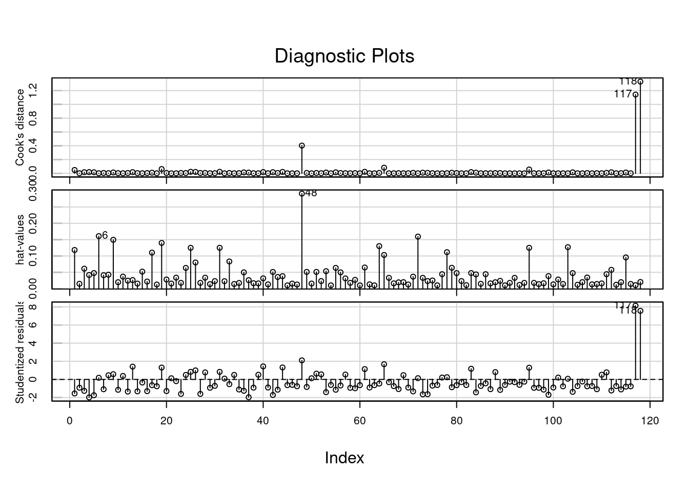
There are two values (117 and 118) with a very high cook distance and very high studentized residual. We can try to fit a model without these values and check what happens to the model:
dat_no_out <- dat[-c(117, 118), ]
fit_no_out <- glm(tantrum ~ attachment + temperament + parent_se + parent_skills, family = poisson(link = "log"), data = dat_no_out)
summary(fit_no_out)
Call:
glm(formula = tantrum ~ attachment + temperament + parent_se +
parent_skills, family = poisson(link = "log"), data = dat_no_out)
Coefficients:
Estimate Std. Error z value Pr(>|z|)
(Intercept) 3.72884 0.39403 9.463 < 2e-16 ***
attachmentsecure -0.41074 0.16838 -2.439 0.0147 *
temperamenteasy -1.08473 0.15090 -7.188 6.56e-13 ***
parent_se 0.01940 0.04055 0.478 0.6324
parent_skills -0.53074 0.04109 -12.915 < 2e-16 ***
---
Signif. codes: 0 '***' 0.001 '**' 0.01 '*' 0.05 '.' 0.1 ' ' 1
(Dispersion parameter for poisson family taken to be 1)
Null deviance: 382.413 on 115 degrees of freedom
Residual deviance: 84.882 on 111 degrees of freedom
AIC: 257.73
Number of Fisher Scoring iterations: 5The model seems to be clearly improved, especially in terms of overdispersion:
sum(residuals(fit_no_out, type = "pearson")^2)/fit_no_out$df.residual[1] 0.81442performance::check_overdispersion(fit_no_out)# Overdispersion test
dispersion ratio = 0.814
Pearson's Chi-Squared = 90.401
p-value = 0.924No overdispersion detected.We can also compare the two models in terms of coefficients:
car::compareCoefs(fit_s, fit_no_out)Calls:
1: glm(formula = tantrum ~ attachment + temperament + parent_se +
parent_skills, family = poisson(link = "log"), data = dat)
2: glm(formula = tantrum ~ attachment + temperament + parent_se +
parent_skills, family = poisson(link = "log"), data = dat_no_out)
Model 1 Model 2
(Intercept) 3.191 3.729
SE 0.349 0.394
attachmentsecure -0.0515 -0.4107
SE 0.1596 0.1684
temperamenteasy -0.824 -1.085
SE 0.141 0.151
parent_se -0.0188 0.0194
SE 0.0360 0.0405
parent_skills -0.3888 -0.5307
SE 0.0345 0.0411
In fact, there are some coefficients with different values. We can check also the dfbeta plots:
dfbeta_plot(fit_s)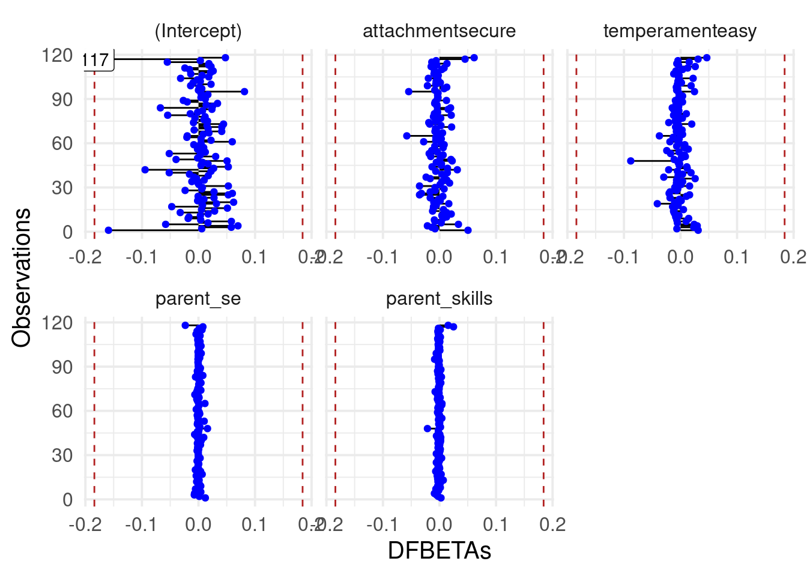
The previous observations seems to do not affect the estimated parameters but they impact the overall model fit, deviance and residuals.
Let’s have a look at residuals now:
car::residualPlot(fit_no_out)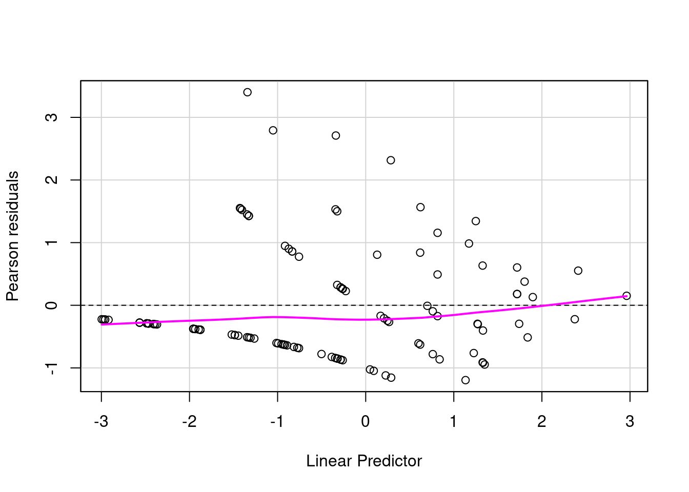
There is still some strange pattern but the majority of the distribution seems to be between -1 and 1.
5. Interpreting parameters
Before anything else, just plot the effects:
plot(allEffects(fit_no_out))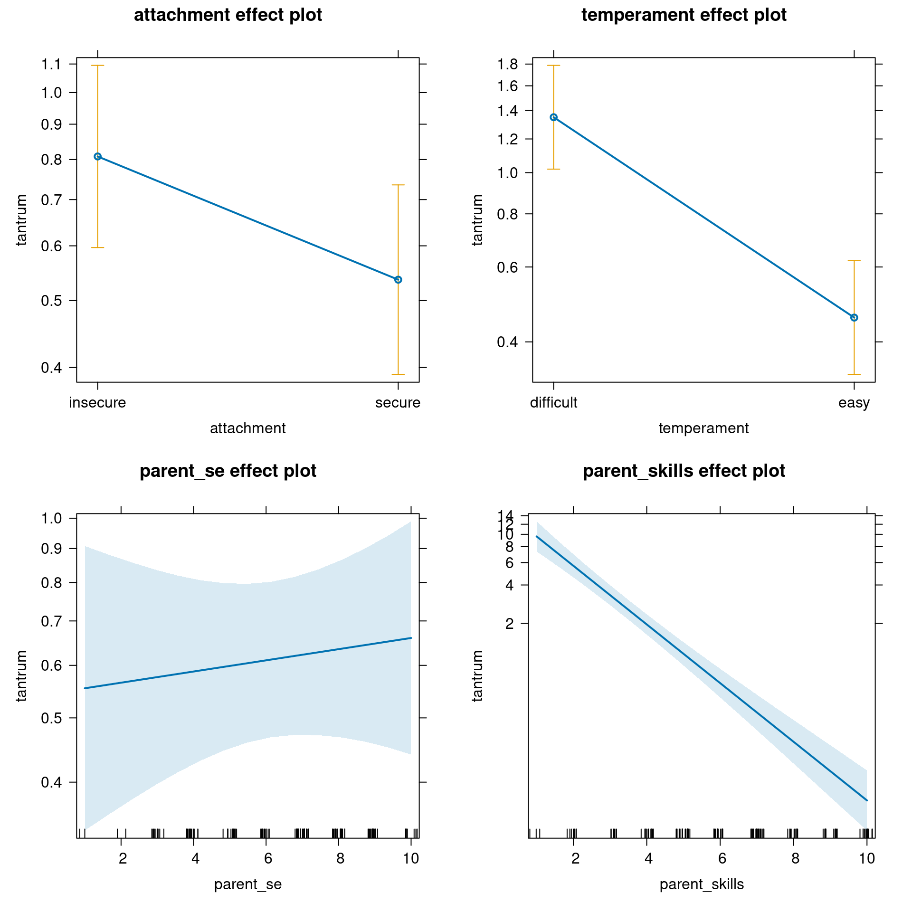
Now we can interpret model parameters:
summary(fit_no_out)
Call:
glm(formula = tantrum ~ attachment + temperament + parent_se +
parent_skills, family = poisson(link = "log"), data = dat_no_out)
Coefficients:
Estimate Std. Error z value Pr(>|z|)
(Intercept) 3.72884 0.39403 9.463 < 2e-16 ***
attachmentsecure -0.41074 0.16838 -2.439 0.0147 *
temperamenteasy -1.08473 0.15090 -7.188 6.56e-13 ***
parent_se 0.01940 0.04055 0.478 0.6324
parent_skills -0.53074 0.04109 -12.915 < 2e-16 ***
---
Signif. codes: 0 '***' 0.001 '**' 0.01 '*' 0.05 '.' 0.1 ' ' 1
(Dispersion parameter for poisson family taken to be 1)
Null deviance: 382.413 on 115 degrees of freedom
Residual deviance: 84.882 on 111 degrees of freedom
AIC: 257.73
Number of Fisher Scoring iterations: 5The (Intercept) is the expected number of tantrums for “insecure”, “difficult” children where parent_skills are rated as 0 and parent self esteem is 0, thus 41.6307958. Similarly to the binomial lab, we could center the two numerical variables to have a more meaningful interpretation or we can use the predict function to obtain the values that we want.
predict(fit_no_out, newdata = data.frame(attachment = "insecure",
temperament = "difficult",
parent_se = mean(dat$parent_se),
parent_skills = mean(dat$parent_skills)),
type = "response") # same as exp(prediction) 1
1.719356 The attachmentsecure is the expected difference in log number of tantrums between secure - insecure attachment, controlling for other variables:
emmeans(fit_no_out, pairwise~attachment)$emmeans
attachment emmean SE df asymp.LCL asymp.UCL
insecure 0.0302 0.152 Inf -0.268 0.3289
secure -0.3805 0.153 Inf -0.679 -0.0816
Results are averaged over the levels of: temperament
Results are given on the log (not the response) scale.
Confidence level used: 0.95
$contrasts
contrast estimate SE df z.ratio p.value
insecure - secure 0.411 0.168 Inf 2.439 0.0147
Results are averaged over the levels of: temperament
Results are given on the log (not the response) scale. In terms of the response scale, we can intepret it as the multiplicative increase of the number of tantrums from secure to insecure attachment:
exp(coef(fit_no_out)["attachmentsecure"])attachmentsecure
0.6631612 Moving from insecure from secure attachment, there is a decrease in the expected number of tantrums of 33.6838801 %.
The temperamenteasy can be interpreted in the same way:
emmeans(fit_no_out, pairwise~temperament)$emmeans
temperament emmean SE df asymp.LCL asymp.UCL
difficult 0.367 0.143 Inf 0.0868 0.648
easy -0.717 0.152 Inf -1.0161 -0.419
Results are averaged over the levels of: attachment
Results are given on the log (not the response) scale.
Confidence level used: 0.95
$contrasts
contrast estimate SE df z.ratio p.value
difficult - easy 1.08 0.151 Inf 7.188 <.0001
Results are averaged over the levels of: attachment
Results are given on the log (not the response) scale. exp(coef(fit_no_out)["temperamenteasy"])temperamenteasy
0.3379941 So there is a reduction of the 66.2005908 % by moving from difficult to easy temperament.
parent_se and parent_skills are interpreted similarly. The coefficient represent the increase/decrease in the log number of tantrums for a unit increase in the predictors.
exp(coef(fit_no_out)[4:5]) parent_se parent_skills
1.0195878 0.5881722 So the number of tantrums seems to be unaffected by the parents self-esteem but as the parent skills increases there is a reduction in the number of tantrums.
6. Model selection
Let’s compare the model with and without the parent_se terms that appear to be not very useful:
fit_no_parent_se <- update(fit_no_out, . ~ . -parent_se)
summary(fit_no_parent_se)
Call:
glm(formula = tantrum ~ attachment + temperament + parent_skills,
family = poisson(link = "log"), data = dat_no_out)
Coefficients:
Estimate Std. Error z value Pr(>|z|)
(Intercept) 3.88096 0.23280 16.671 < 2e-16 ***
attachmentsecure -0.40422 0.16787 -2.408 0.016 *
temperamenteasy -1.08057 0.15080 -7.166 7.75e-13 ***
parent_skills -0.53723 0.03905 -13.757 < 2e-16 ***
---
Signif. codes: 0 '***' 0.001 '**' 0.01 '*' 0.05 '.' 0.1 ' ' 1
(Dispersion parameter for poisson family taken to be 1)
Null deviance: 382.413 on 115 degrees of freedom
Residual deviance: 85.111 on 112 degrees of freedom
AIC: 255.96
Number of Fisher Scoring iterations: 5anova(fit_no_parent_se, fit_no_out, test = "LRT")Analysis of Deviance Table
Model 1: tantrum ~ attachment + temperament + parent_skills
Model 2: tantrum ~ attachment + temperament + parent_se + parent_skills
Resid. Df Resid. Dev Df Deviance Pr(>Chi)
1 112 85.111
2 111 84.882 1 0.22948 0.6319drop1(fit_no_out, test = "LRT")Single term deletions
Model:
tantrum ~ attachment + temperament + parent_se + parent_skills
Df Deviance AIC LRT Pr(>Chi)
<none> 84.882 257.73
attachment 1 90.605 261.45 5.724 0.01674 *
temperament 1 136.028 306.87 51.146 8.573e-13 ***
parent_se 1 85.111 255.96 0.229 0.63191
parent_skills 1 304.711 475.56 219.829 < 2.2e-16 ***
---
Signif. codes: 0 '***' 0.001 '**' 0.01 '*' 0.05 '.' 0.1 ' ' 1Or using the MuMIn::dredge() function:
fit_no_out <- update(fit_no_out, na.action = na.fail)
MuMIn::dredge(fit_no_out, rank = "AIC")Fixed term is "(Intercept)"Global model call: glm(formula = tantrum ~ attachment + temperament + parent_se +
parent_skills, family = poisson(link = "log"), data = dat_no_out,
na.action = na.fail)
---
Model selection table
(Int) att prn_se prn_skl tmp df logLik AIC delta weight
14 3.88100 + -0.5372 + 4 -123.978 256.0 0.00 0.608
16 3.72900 + 0.0194000 -0.5307 + 5 -123.863 257.7 1.77 0.251
13 3.48300 -0.5133 + 3 -126.768 259.5 3.58 0.102
15 3.38600 0.0118300 -0.5090 + 4 -126.725 261.5 5.49 0.039
5 2.89700 -0.5160 2 -150.397 304.8 48.84 0.000
6 3.08300 + -0.5235 3 -149.436 304.9 48.92 0.000
7 2.96600 -0.0082560 -0.5189 3 -150.376 306.8 50.80 0.000
8 3.08500 + -0.0002435 -0.5236 4 -149.436 306.9 50.92 0.000
11 0.16220 0.1467000 + 3 -234.197 474.4 218.44 0.000
12 0.06833 + 0.1469000 + 4 -233.778 475.6 219.60 0.000
9 1.13900 + 2 -243.108 490.2 234.26 0.000
10 1.04200 + + 3 -242.642 491.3 235.33 0.000
3 -0.48580 0.1398000 2 -264.575 533.1 277.19 0.000
4 -0.52520 + 0.1395000 3 -264.498 535.0 279.04 0.000
1 0.45590 1 -272.629 547.3 291.30 0.000
2 0.39690 + 2 -272.475 549.0 292.99 0.000
Models ranked by AIC(x) 7. What about interactions?
We can also have a look at interactions, try by yourself to explore interactions between numerical (parent_skills and parent_se) and categorical (attachment and temperament) variables. I’m only interested in 1 continuous variable interacting with 1 categorical variable.
- fit a separate model for each interaction
- interpret the model parameters and the analysis of deviance table (
car::something :)) or using a model comparison (Likelihood Ratio Test) for testing the interaction - plot the model effects
- comment the results